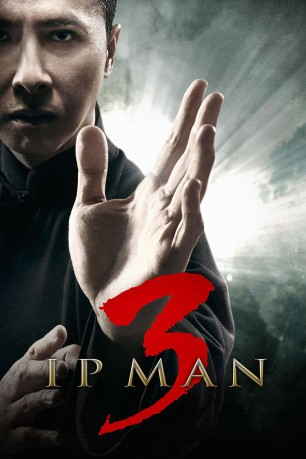
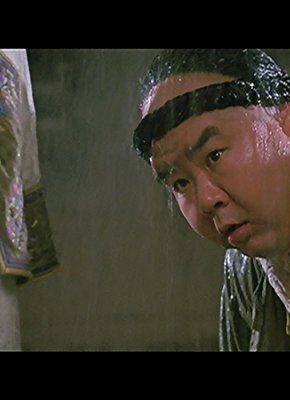
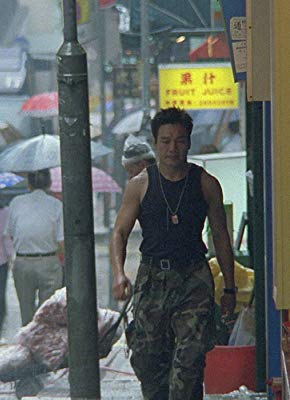

#7779 Ip Man 3
 
 IMDB-Wertung: 7.1 / 10
IMDB-Wertung: 7.1 / 10  Metascore: 0
Metascore: 0 
Hong Kong, 1959: Der legendäre Wing Chun-Kampfsportler Ip Man (Donnie Yen) führt ein ruhiges Leben mit seiner gesundheitlich eingeschränkten Frau Wing-sing (Lynn Hung) und seinem Sohn Ip Ching. Doch als der korrupte US-Bauträger Frank (Mike Tyson) und seine Schergen mit Gewalt das Land, auf dem die Schule von Ips Sohn gebaut ist, an sich reißen wollen, schreitet der Meister ein. Zusammen mit dem begabten Wing Chun-Wettkämpfer Cheung Tin-chi (Zhang Jin), dem Vater von Ip Chings Mitschüler Cheung Fung, macht es sich Ip Man zur Aufgabe, die Schule mit allen Mitteln vor dem raffgierigen Frank zu schützen. Als Ip schließlich Frank gegenübersteht, fordert der korrupte Bauträger den rechtschaffenen Kampfsportler zu einem dreiminütigen Kampf auf, der entscheiden über das Schicksal der Schule entscheiden soll...
Jahr: 2015
Dauer: 104 Minuten
FSK: 12
Land: China Studio: KSMTonspuren: DTS-HD - ,
Untertitel:
Auflösung: 1080p (1920x1080) Größe: 15155 MB
Genre: Action, Drama, Geschichte, Biographie
Regisseur: Wilson Yip
Drehbuch: Tai-lee Chan
Soundtrack: Kenji Kawai
Darsteller:
 Donnie Yen als Ip Man
Donnie Yen als Ip Man- Lynn Hung als Cheung Wing-sing
 Jin Zhang als Cheung Tin-chi
Jin Zhang als Cheung Tin-chi Mike Tyson als Frank
Mike Tyson als Frank- Karena Ng als Miss Wong
- Kai-Chung Cheung als Chui Lek
-  Kent Cheng als Fatso
- Ka-Yan Leung als Master Tin
- Kwok-Kwan Chan als Bruce Lee
- Babyjohn Choi als Editor Lee
- Tats Lau als Principal
- Jiuyi Zhao als Cheung Tin Chi's Student #3
- Chaoli Zhang als Police officer
- Patrick Tam als Ma King-Sang
- Sung Man Ban als David
- Xiao Long Li als Ah Ching
- Ling Lei als Ip Man's Student #1
- Kang Yu als Master Tam
-  Meng Lo als Master Law
- Siu-Hung Leung als Master Lee
- Chen Chao als Master Chan
- Wang Yan Shi als Ip Ching
- Can Cui als Cheung Fong
- Sarut Khanwilai als Thai Boxer
- Jonathan Kos-Read als Edward
- Zong Fei als Frank's Wife
- Yifei Liu als Frank''s Daughter
- Yang Jia Zhen als Resident #1
- Zhang Jie als Resident #2
- Jing Wong als Resident #3
- Zhang Cui Feng als Resident #4
- Yuan Miao als Teacher #1
- Wang Xing als Teacher #2
- Sin Tsz Man als Teacher #3
- Dan-Chun als Estate Agent
- Xu Jia als Ip Man's Student #2
- Ni Han Jin als Ip Man's Student #3
- Zhang Min Kang als Ip Man's Student #4
- Cai Xia Jie als Ma King Sang's Subordinate #1
- Cheng Si Tao als Ma King Sang's Subordinate #2
- An Qiang als Dance Teacher
- Qian Da Wei als Notary
- Wang Guo als Mr. Huang
- Li Yun als Journalist #1
- Li Zhang als Journalist #2 / Police Officer #1
- Yao Dong als Announcer #1
- Ben Wang als Announcer #2
- Wen Hao Huang als Restaurant Owner
- Zhang Wei als Restaurant Waiter
- Xu Jian als Police Officer #2
Datei: X:\HD-Eastern-Collections\Ip Man\Ip Man 3 (2015, FSK12, 1920x1080).mkv seit 15.12.2017
Festplatte: HD Eastern+Western
 Es gibt insgesamt 11 Filme in der Gruppe 'HD-Eastern-Collections\Ip Man'
Es gibt insgesamt 11 Filme in der Gruppe 'HD-Eastern-Collections\Ip Man'